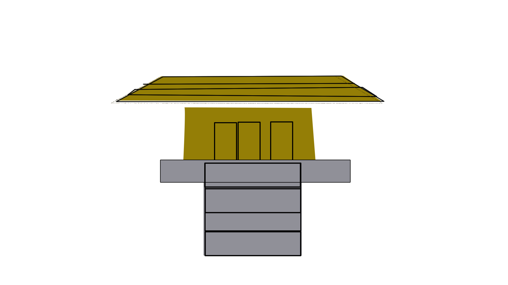

Ninja could tell the time by using the sun.
Ninjas could tell their direction no matter where there are.
Ninjas when they were tired they usually use treetops to rest.
Ninjas are survivalists that were trained live off land .
Ninjas carry crickets in their pocket to muffle their footsteps.
Ninjas take training seriously they are put in different groups and the groups have different colors.

Ninjas don't make niose while walking.
Ninjas use poision alot
Ninjas use hand signs
Ninjas have those boots to make fake footprints.